Box 31.9 G/M/1 Queue
- 1. Parameters:
- E[τ] = mean interarrival time
- µ = service rate in jobs per unit time
- If 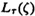 is the Laplace transform of the probability density function of the interarrival time τ, then let
 be the solution of the equation 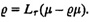
be the solution of the equation 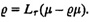
- µ = service rate in jobs per unit time
- 2. Traffic intensity: ρ = 1/(E[τ] µ)
- 3. The system is stable if the traffic intensity ρ is less than 1.
- 4. Probability of zero jobs in the system: ρ0 = 1 – ρ
- 5. Probability of n jobs in the system: 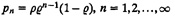
- 6. Mean number of jobs in the system: 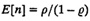
- 7. Variance of number of jobs in the system: 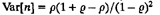
- 8. Cumulative distribution function of the response time: 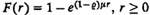
- 9. Mean response time: 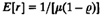
- 10. Variance of response time: 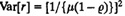
- 11. Probability distribution function of the waiting time: 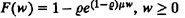
- 12. Mean waiting time:
- 13. Variance of waiting time: 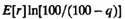
- 14. q-Percentile of the response time: E[r]ln[100/(100 – q)]
- 15. 90-Percentile of the response time: E[r]ln[101 = 2.3E[r]
- 16. q-Percentile of the waiting time: max(0,(E[w]/
 )ln[100
)ln[100 /(100 – q)]). At low traffic intensities, the second term in this expression can be negative. The correct q-percentile for those cases is 0.
/(100 – q)]). At low traffic intensities, the second term in this expression can be negative. The correct q-percentile for those cases is 0.
- 17. 90-Percentile of the waiting time: max(0,(E[w]/
 )ln(10
)ln(10 )). At low traffic intensities, the second term in this expression can be negative. The correct 90-percentile for those cases is 0.
)). At low traffic intensities, the second term in this expression can be negative. The correct 90-percentile for those cases is 0.
- 18. Probability of finding n or more jobs in the system: 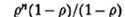
- E[τ] = mean interarrival time
For Poisson arrivals, 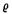 and all formulas become identical to those for M/M/1 queues.